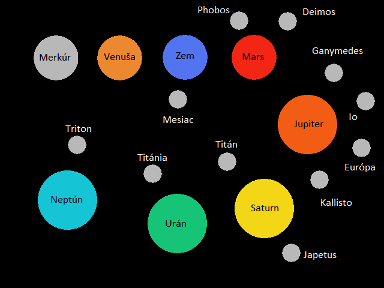

Cieľ hry
V tejto adventúre sa stanete pilotom vesmírnej lode, ktorá bola vyslaná na medziplanetárnu misiu v Slnečnej sústave. Cieľom tejto misie je preskúmať Slnečnú sústavu, pozbierať určité veci a materiály, ktoré sú potrebné ku konštrukcii vesmírnej flotily a vrátiť úspešne naspäť na Zem. Flotila bude vyslaná mimo Slnečnej sústavy a jej cieľ bude kontaktovať mimozemskú civilizáciu.
Zoznam potrebných vecí a materiálov
Veci a materiály, ktoré bude potrebné zozbierať sú nasledovné:
- Hľadač mimozemskej inteligencie (HMI)
- Kvapalný vodík
- Kvapalný kyslík
- Protónová strela
- Laserový únosný lúč (LUL)
- Kresliteľ polí
Príkazy
V hre je možné zadať nasledovné príkazy:
| Príkaz | Čo robí | Použitie |
|---|---|---|
| napoveda | Tento príkaz zobrazí všetky ostatné príkazy a vašu úlohu | napoveda |
| prozkoumej | Príkaz umožní preskúmanie jednotlivých vecí a materiálov | prozkoumej vec |
| let | Umožňuje vám uskutočniť let na inú planétu alebo mesiac | let planeta |
| konec | Pomocou tohto príkazu ukončíte hru | konec |
| vloz | Tento príkaz umožňuje vloženie veci/materiálu do inventár | vloz vec |
| inventar | Tento príkaz zobrazí veci, ktoré má lod aktuálne na palube | inventar |
| vyhod | Príkaz vyhod vyhodí vec/materiál z inventára | vyhod vec |
| oprav | Pomocou tohto príkazu opravíte vašu lod, ale v inventári musíte mať opravný balíček | oprav |
| tankuj | Pomocou tohto príkazu opravíte vašu lod, ale v inventári musíte mať palivo | tankuj |
Mapa planét/mesiacov
Nástrahy
V hre sa nachádza viacero nástrah, ktorým sa budete musieť vyvarovať, aby ste vyhrali. K niektorým planétam (plynným obrom) sa nebudete môcť priblížiť bez špeciálneho veterného štítu, pretože inak by vás rozmetali silné vetry, ktoré vejú na týchto planétach. Na niektorých mesiacoch si na vás počíhajú vesmírni piráti, ktorí vás budú chcieť zabiť a zmocniť sa predmetov na lodi. Loď bohužiaľ nie je vybavená žiadnymi zbraňami, preto jediná možnosť ako pirátom ujsť je odletieť na inú planétu, mesiac. Niekedy však piráti môžu byť rýchlejší a tým pádom máte smolu. Loď sa pri lete opotrebúva a preto budete musieť hľadať opravné balíčky, s ktorými si môžete opraviť loď. Ak takýto balíček nenájdete alebo ho zabudnete použiť, loď sa zničí a misiu nedokončíte. Loď má obmedzené množstvo paliva, preto si musíte dávať pozor na to, aby ste mali dostatok paliva na let na inú planétu/mesiac. Palivo môžete nájsť na rôznych planétach/mesiacoch. Pri vyčerpaní paliva nemôžete letieť ďalej a tým pádom bude misia neúspešná.
Tipy k hre
- Dávajte si pozor na stav paliva lode, ak je veľmi nízky, tak hrozí, že na ďalšiu planétu či mesiac nedoletíte. Snažte sa tankovať pri minimálnom množstve paliva, aby ste zužitkovali čo najviac
- Dávajte si pozor na stav života lode, ktorá sa opotrebúva pri každom prelete. Opravný balík použite s rozvahou tak, aby loď mala dostatok života.
- Veľké planéty (plynné obry) majú veľmi husté atmosféry a dujú v nich silné vetry. Na preskúmanie týchto planét budete potrebovať špeciálny štít.
- Piráti sa obvykle nevyskytujú na plynných obroch, práve kvôli silným vetrom.